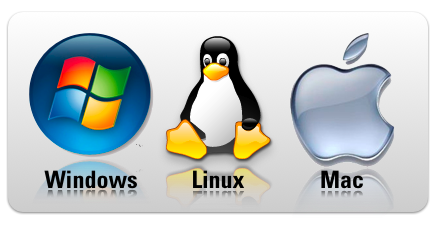

5 principales tendencias e innovaciones tecnológicas en el Hogar Digital
Les mostrare las 5 tendencias en el mundo de las tecnologias del hogar:
- Sistemas multiplataforma
- Integración de dispositivos inteligentes
- ídeo inteligencia
- Gestión remota del hogar
- Ciberseguridad
Sistemas multiplataforma que permitirán conectar múltiples dispositivos, no sólo de seguridad, sino también de visualización y confort, creando un hogar inteligente que se adecue a las necesidades y preferencias de cada usuario. Esta tendencia se verá reforzada con el acceso desde cualquier plataforma (dispositivo móvil, pc, etc.), aportando al usuario la comodidad de gestionar y monitorizar su hogar esté donde esté.

Integración de dispositivos inteligentes con el objetivo de crear un hogar conectado, se podrá crear un sistema completo e interactivo en el que todos los dispositivos, que anteriormente no se encontraban conectados entre sí, ahora estarán integrados y podrán ser utilizados de manera unificada y simple, en un mismo sistema de uso accesible para todos los miembros del hogar.
Vídeo inteligencia con máxima velocidad y calidad HD en cámaras de vídeo para exteriores e interiores que con tecnología avanzada recabarán imágenes nítidas para visualizar lo que ocurre en el hogar 24/7; y que incorporarán analítica de vídeo y alertas inteligentes con las que podrán avisar de lo que ocurre cada vez que se detecte un movimiento. El usuario podrá incorporar funciones de acompañamiento y cuidado de personas mayores o vulnerables, vigilancia de niños y mascotas, entre otras, de manera remota y confiable.
Gestión remota del hogar que permitirá al usuario gestionar con alta capacidad y fiabilidad, todos los dispositivos conectados de su hogar desde cualquier lugar y en cualquier momento, ejecutando funcionalidades tales como el control de la temperatura, el apagado y encendido de luces, la vigilancia a través de cámaras, la apertura y cierre de puertas, entre otros.
Ciberseguridad para proteger también la vida digital de los hogares conectados, permitiendo así, que los dispositivos móviles y otros dispositivos conectados en el hogar y la intimidad de la familia no pueda ser ciberatacada. La creación de un espacio ciberseguro ante los clásicos virus y potenciales ciberataques, así como supervisar la actividad digital en Internet dará al usuario la tranquilidad de estar protegido en el entorno conectado de su hogar.